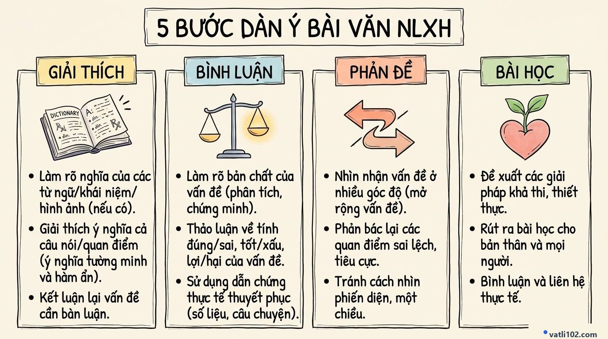

Kỹ Thuật Viết Bài Văn Nghị Luận Xã Hội Điểm 8+ Thi Vào 10: Dàn Ý 5 Bước & Bài Mẫu Hoàn Chỉnh
Trong đề thi tuyển sinh vào lớp 10 môn Ngữ văn tại nhiều tỉnh thành, câu viết bài văn hoặc đoạn văn Nghị luận xã hội (chiếm từ 2.0 đến 3.0 điểm) là phần thi phản ánh rõ nét nhất tư duy lập luận và vốn sống của học sinh.
Nhiều bạn học sinh thường gặp khó khăn vì không biết sắp xếp các ý như thế nào cho logic, dẫn đến bài viết bị lộn xộn hoặc thiếu chiều sâu. Bài viết này sẽ chia sẻ đến các em khung xương 5 bước lập dàn ý thân bài giúp bài làm mạch lạc, thuyết phục và tự tin đạt điểm 8+ trở lên.
1. Cấu trúc tổng thể của bài văn nghị luận xã hội
Một bài văn nghị luận xã hội thi vào 10 (dung lượng khoảng 1.5 đến 2 trang giấy thi) cần có bố cục 3 phần rõ ràng:
- Mở bài (3 – 5 dòng): Dẫn dắt ngắn gọn và giới thiệu đúng vấn đề tư tưởng hoặc hiện tượng cần bàn luận.
- Thân bài (chiếm phần lớn dung lượng): Triển khai tuần tự theo 5 bước lập luận chặt chẽ.
- Kết bài (3 – 5 dòng): Khẳng định lại ý nghĩa vấn đề và rút ra bài học cho bản thân.
2. Sơ đồ Sketchnote: 5 Bước triển khai thân bài sắc bén

3. Hướng dẫn chi tiết 5 bước lập dàn ý thân bài
BƯỚC 1: GIẢI THÍCH VẤN ĐỀ (Khoảng 4 – 5 dòng)
Giải thích ngắn gọn nghĩa đen (từ ngữ thực tế) -> nghĩa bóng (bài học đạo lý) -> chốt lại nội dung chính của đề bài. Tránh giải thích lòng vòng kiểu tra từ điển.
BƯỚC 2: NÊU BIỂU HIỆN THỰC TẾ (Khoảng 4 – 5 dòng)
Chỉ ra những biểu hiện cụ thể của vấn đề trong đời sống hàng ngày: trong gia đình, trong trường học và ngoài xã hội.
BƯỚC 3: BÌNH LUẬN & ĐƯA DẪN CHỨNG (Trọng tâm — Chiếm 1/2 thân bài)
- Phân tích vì sao (Ý nghĩa): Phẩm chất/vấn đề đó mang lại lợi ích gì cho bản thân mỗi người? Đóng góp gì cho sự phát triển của cộng đồng?
- Đưa 1 dẫn chứng tiêu biểu: Áp dụng công thức 3T (Nêu tên đích danh -> Tóm tắt việc nổi bật -> Nêu tác động lan tỏa).
BƯỚC 4: PHẢN ĐỀ & MỞ RỘNG (Khoảng 5 – 7 dòng)
Lật ngược lại vấn đề để phê phán lối sống thờ ơ, ích kỷ, lười biếng. Phân biệt rõ ràng các khái niệm: Khiêm tốn không có nghĩa là tự ti; Tự tin khác hoàn toàn với thói kiêu ngạo.
BƯỚC 5: BÀI HỌC NHẬN THỨC & HÀNH ĐỘNG (Khoảng 4 – 5 dòng)
- Nhận thức: Hiểu rõ giá trị đúng đắn của vấn đề đối với sự trưởng thành của con người.
- Hành động: Nêu những việc làm cụ thể, thiết thực của bản thân mỗi ngày (chăm chỉ học tập, lễ phép, biết giúp đỡ mọi người).
4. Bài văn mẫu hoàn chỉnh 800 chữ tham khảo (Điểm 9.0)
Từ ngàn xưa, ông cha ta đã luôn nhắc nhở con cháu đạo lý: "Uống nước nhớ nguồn", "Ăn quả nhớ kẻ trồng cây". Con người khi sinh ra và lớn lên không ai có thể tự mình trưởng thành nếu thiếu đi sự chăm sóc của cha mẹ, sự dạy dỗ của thầy cô và sự hỗ trợ từ xã hội. Chính vì thế, lòng biết ơn là một phẩm chất đạo đức cao đẹp và cần thiết trong hành trình hoàn thiện nhân cách của mỗi chúng ta.
Lòng biết ơn là sự trân trọng, ghi nhớ và ý thức đền đáp công lao, sự giúp đỡ mà người khác đã dành cho mình. Phẩm chất này được thể hiện rất giản dị trong cuộc sống: từ sự hiếu thảo với ông bà cha mẹ, thái độ lễ phép kính trọng thầy cô, sự tri ân trước những hy sinh của thế hệ đi trước, cho đến lời cảm ơn chân thành khi nhận được sự giúp đỡ nhỏ bé trên đường đời.
Lòng biết ơn có ý nghĩa vô cùng quan trọng đối với mỗi cá nhân và toàn xã hội. Đối với bản thân, khi biết ơn, tâm hồn chúng ta sẽ trở nên nhẹ nhàng, biết quý trọng những gì mình đang có và tránh được thói ích kỷ, kiêu căng. Người có lòng biết ơn luôn được mọi người xung quanh yêu quý, tin cậy và sẵn lòng giúp đỡ khi gặp khó khăn. Đối với xã hội, lòng biết ơn giúp gắn kết các thế hệ, tạo nên một cộng đồng nhân ái, ấm áp nghĩa tình và gìn giữ được những giá trị truyền thống tốt đẹp của dân tộc.
Trong thực tế cuộc sống hôm nay, truyền thống ấy vẫn luôn được thế hệ trẻ gìn giữ qua những việc làm thiết thực. Nhiều bạn học sinh, sinh viên đã tích cực tham gia các phong trào chăm sóc Mẹ Việt Nam Anh hùng, quyên góp sách vở cho các em nhỏ vùng khó khăn. Những hành động ý nghĩa đó cho thấy lòng biết ơn khi được chuyển hóa thành việc làm cụ thể sẽ mang lại niềm vui và sự ấm áp cho biết bao mảnh đời.
Tuy vậy, trong xã hội hiện đại vẫn còn một số người sống với thái độ vô cảm, coi sự hy sinh của cha mẹ hay sự giúp đỡ của người khác là điều hiển nhiên. Lối sống ích kỷ, "vong ân bội nghĩa" đó là biểu hiện đáng chê trách. Chúng ta cần hiểu rằng, biết ơn không phải là sự trả ơn hình thức hay vụ lợi, mà là tình cảm xuất phát từ sự chân thành của trái tim.
Là một học sinh lớp 9 đang chuẩn bị bước vào kỳ thi quan trọng, em luôn tự nhủ phải thể hiện lòng biết ơn bằng những hành động cụ thể mỗi ngày: cố gắng học tập thật tốt, vâng lời cha mẹ, kính trọng thầy cô và biết quan tâm, giúp đỡ bạn bè xung quanh. Sống biết ơn sẽ giúp mỗi chúng ta trở thành một người có ích và làm cho cuộc sống thêm nhiều niềm vui, ý nghĩa.
5. Bộ Mở bài & Kết bài tham khảo dễ vận dụng
"Trong hành trình trưởng thành của mỗi người, những phẩm chất đạo đức tốt đẹp luôn đóng vai trò quan trọng định hình nhân cách. Một trong những đức tính quý giá và cần thiết nhất đối với cuộc sống của chúng ta hôm nay chính là [TÊN VẤN ĐỀ]..."
"Tóm lại, [TÊN VẤN ĐỀ] là một bài học đạo lý sâu sắc không bao giờ cũ. Nhận thức đúng và rèn luyện đức tính ấy ngay từ hôm nay sẽ là hành trang vững chắc giúp mỗi bạn trẻ tự tin vững bước trên con đường tương lai."